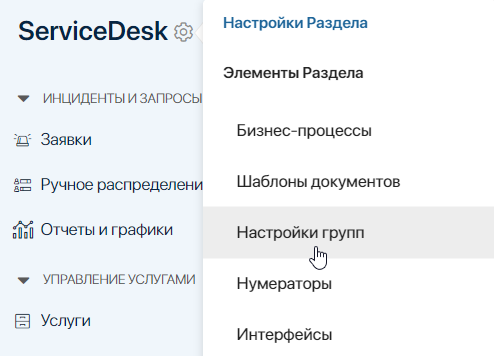
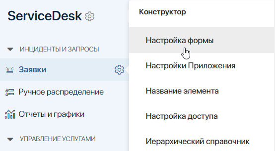
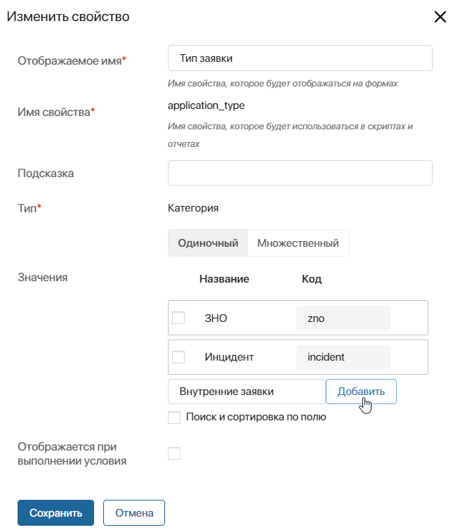
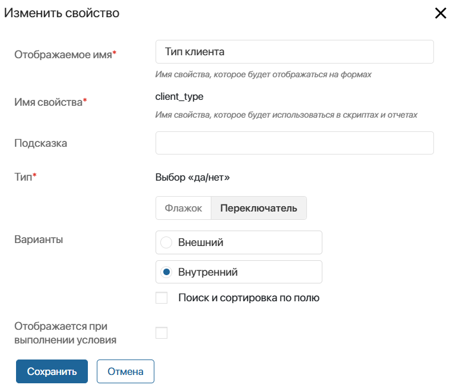

Бизнес-решение ServiceDesk 2.0 предназначено для обработки заявок, поступающих с внешнего портала или из раздела Линии и фиксируемых в разделе ServiceDesk.
Чтобы пользователи начали работать с решением ServiceDesk 2.0, администратор системы должен выполнить следующие действия:
- Установить и активировать решение.
- Включить модули, входящие в состав решения, для корректной работы приложений и отображения данных.
- Настроить группы и права доступа к разделу ServiceDesk, чтобы определить роли и зоны ответственности пользователей и ограничить им доступ к данным приложений.
- Заполнить данные раздела «Системные справочники».
- Заполнить справочники для настройки оказания услуг и создания заявок.
- Добавить типы заявок.
- Настроить определение автора заявок.
- Настроить каналы поступления обращений.
- Настроить форму обратной связи.
Установить и активировать решение ServiceDesk 2.0
Чтобы импортировать решение ServiceDesk 2.0:
- Перейдите в раздел Администрирование > Решения и в правом верхнем углу нажмите кнопку + Решение.
- В открывшемся окне выберите Скачать и перейдите в каталог ELMA365 Store.
- Найдите в каталоге решение ServiceDesk 2.0 и нажмите кнопку Попробовать бесплатно. Решение будет доступно для работы в течение 14 дней.
Подробнее о процессе добавления решения в систему читайте в статье «Импорт решения из ELMA365 Store».
- Поскольку решение является платным, после пробного периода его необходимо активировать. Для этого перейдите в раздел Администрирование > Управление лицензиями и напротив названия решения нажмите кнопку Активировать.
- В открывшемся окне скопируйте регистрационный токен решения и передайте его менеджеру ELMA365.
- Укажите предоставленный ключ активации решения в форме и нажмите Активировать.
Подробнее читайте в статье «Лицензии ELMA365 Store».
Включить модули решения
Для корректной работы решения в разделе Администрирование > Модули администратору необходимо включить модули, которые позволяют автоматизировать процессы, упорядочить работу и корректно отображать данные приложений:
- История приложений ServiceDesk — используется для регистрации изменений в приложениях Заявки, CMDB, Услуги, Каталоги услуг и отображения данных в отчётах.
Для настройки модуля:
- создайте токен ELMA365 и вставьте его в соответствующее поле настроек модуля;
- заполните таблицу логирования, нажав кнопку Заполнить по умолчанию. В таблице отобразятся свойства приложений Заявки, Услуги, Каталоги услуг, CMDB, изменения которых отслеживаются с помощью модуля.
Вы можете добавить коды пользовательских свойств приложений для логирования. Указать пользовательские приложения для записи истории изменений нельзя.
- Markdown редактор ServiceDesk — содержит виджет markdown-разметки. После включения модуля на карточках создания элементов станет доступно поле для описания и подробной информации.
- Tabulator SD — имплементация библиотеки Tabulator. Используется для формирования таблиц, карт и дерева данных, а также для установки связей между родительскими и дочерними элементами приложений.
- Обработка отзывов — отслеживает получение отзывов от клиентов с формы обратной связи и распределяет их. Записи фиксируются в справочнике Отзывы.
- Интеграция с Zabbix — интеграция с инструментом мониторинга оборудования, которая позволяет получать статус оборудования и дополнительную информацию о нём. На основе полученных данных можно создать запросы на изменение конфигурационных единиц.
Для настройки модуля укажите URL, логин и пароль сервиса Zabbix.
- Интеграция с Nagios — используется для мониторинга инфраструктуры и автоматического создания уведомлений о сбоях в приложении CMDB.
Для настройки модуля:
- укажите адрес и ключ API сервиса Nagios;
- выберите, какого типа конфигурационные единицы вы хотите отслеживать. Это могут быть, например, активы типа Лицензии и ПО или Узел сети.
- Интеграция с JIRA — применяется при работе с тикетами и релизами, позволяет создавать задачи в JIRA и контролировать их исполнение.
Для настройки модуля укажите домен и логин в Jira, создайте и введите токен ELMA365.
- Бот для работы с заявками — подключается, чтобы ELMA Bot мог обрабатывать входящие обращения от клиентов.
- История просмотров SD — фиксирует элементы приложений раздела ServiceDesk, которые были просмотрены пользователем. Работает аналогично решению История просмотров из каталога ELMA365 Store.
Для настройки модуля:
- выберите, кому доступна информация о просмотрах элементов приложений;
- укажите интервал времени, после окончания которого записи будут проверяться на дубли и удаляться.
- Создание/изменения внутренних пользователей — используется для автоматического заполнения справочника Внутренние пользователи данными о сотрудниках компании из раздела Администрирование > Пользователи.
Настроить группы и права доступа к разделу ServiceDesk
В первую очередь администратору системы необходимо распределить пользователей по группам, чтобы определить их зоны ответственности. По умолчанию в решении предусмотрена группа Операторы — это сотрудники, которые выполняют обработку заявок клиентов.
Чтобы назначить пользователей операторами и создать другие группы, выполните следующие действия:
- Нажмите на значок шестерёнки справа от названия раздела ServiceDesk и выберите Настройки групп.

- Чтобы изменить состав группы, выберите её в списке и в карточке нажмите Редактировать. В поле Список участников укажите пользователей и сохраните изменения. Таким образом отредактируйте созданную по умолчанию группу Операторы.
- Для создания группы в правом углу открывшейся страницы нажмите + Группа. Задайте название и включите в неё сотрудников.
Подробнее читайте в статье «Группы».
После настройки групп ограничьте сотрудникам доступ к приложениям и данным раздела. Для этого возле названия раздела или приложения нажмите на значок шестерёнки и выберите Настройка доступа.
Например, пользователи, входящие в группу Операторы, должны иметь доступ к главной странице, приложениям Заявки, Проблемы, RFC, Расписание и Активность сотрудника, базе знаний. Возможность просматривать отчёты и работать в системных приложениях выдаётся пользователям, входящим в группу руководителей и администраторов системы.
Подробнее о том, как ограничить пользователям доступ на уровне раздела, приложения и к данным приложений читайте в статье «Система прав доступа в ELMA365».
Заполнить данные раздела «Системные справочники»
Системные справочники — системный раздел, который не входит в состав решения ServiceDesk, но используется для работы и формирования данных в разных приложениях решения.
Администратор заполняет следующие справочники:
- График обслуживания — укажите время работы компании, когда операторы принимают и обрабатывают заявки. При создании графика выберите рабочие и выходные дни, учитывайте праздничные дни производственного календаря;
- Мои юридические лица — храните реквизиты юридических лиц вашей компании;
- Внешние пользователи — добавьте пользователей, которым вы хотите предоставить доступ к работе на внешнем портале. Подробнее читайте в статье «Пригласить пользователей на портал ServiceDesk 2.0».
- Внутренние пользователи — храните сотрудников, которые создают и обрабатывают заявки. Справочник создаётся при активации решения ServiceDesk 2.0.
Заполнить справочник «Внутренние пользователи»
Вы можете добавить внутреннего пользователя следующими способами:
- перейдите в справочник Внутренние пользователи и нажмите кнопку + Внутренний пользователь. В открывшемся окне в поле Пользователь укажите сотрудника компании и нажмите Сохранить;
- включите модуль Создание/изменение внутренних пользователей. В этом случае справочник заполняется информацией о сотрудниках компании из раздела Администрирование > Пользователи. Новые пользователи после приглашения в компанию также автоматически добавляются в справочник Внутренние пользователи;
- добавьте пользователей, импортированных из Active Directory. Для этого перейдите в справочник Внутренние пользователи и нажмите кнопку Создание. Данные будут перенесены из раздела Администрирование > Пользователи. Чтобы дополнить список новыми пользователями, нажмите кнопку Обновление.
При этом способе также добавляется информация о пользователе в справочник Сотрудники, если записи о нём не было.
В справочнике вы также можете назначить график работы. Для этого отметьте пользователей, нажмите С выделенными… и выберите Изменить график работы. Укажите нужный график и нажмите Сохранить. Подробнее читайте в статье «График работы».
Заполнить справочники для настройки оказания услуг и создания заявок
Чтобы клиенты могли создавать запросы на услуги, а операторы обрабатывать заявки от клиентов, администратор системы должен заполнить следующие справочники раздела ServiceDesk:
- Справочники с информацией для настройки предоставления услуг:
- Группа поддержки — определите сотрудников линий поддержки, которые будут получать и обрабатывать заявки;
- Активности — создайте виды рабочей и нерабочей деятельности операторов;
- Варианты смен — распределите рабочие и нерабочие активности по времени для формирования расписания работы сотрудников;
- График работы — создайте шаблоны с разными вариантами распределения смен по дням недели и циклам;
- OLA — настройте правила обработки заявок, которые действуют при взаимодействии сотрудников разных уровней поддержки между собой;
- Маршруты — постройте схему обработки заявок и отметьте нормативы OLA для каждого этапа работы с обращением;
- SLA — определите условия оказания услуг;
- Услуги, Каталоги услуг — укажите, какие услуги вы предоставляете, и сгруппируйте их по каталогам.
- Контакты и Компании раздела CRM — заполняйте и храните данные о клиентах, которые отправляют заявки;
- Уровень воздействия — определите степени влияния обращений на пользователей;
- Приоритизация — создайте правила для автоматического определения приоритета заявки;
- Шаблоны заявок — создайте шаблоны, которыми будут пользоваться операторы при создании заявок типа ЗНО;
- Тег — создайте ключевые слова, чтобы облегчить операторам поиск заявок.
Подробнее о справочниках раздела читайте в статье «Справочники ServiceDesk».
Добавить типы заявок
По умолчанию в приложении Заявки можно регистрировать обращения двух типов: ЗНО (запрос на обслуживание) и Инцидент. Вы можете создать дополнительные типа заявок.
Начало внимание
При изменении типа заявок будет невозможно обновить решение ServiceDesk 2.0. Перед обновлением верните первоначальные настройки. Подробнее о возможных конфликтах при обновлении читайте в статье «Обновить решение».
Конец внимание
- Нажмите на значок шестерёнки справа от названия приложения Заявки и выберите Настройка формы.

- В открывшемся окне на вкладке Контекст нажмите на свойство Тип заявки.
- В окне изменения свойства в поле Значения добавьте новый тип обращения, например, Внутренние заявки.

- Нажмите кнопку Добавить, а затем Сохранить.
- В правом верхнем углу окна настройки формы нажмите Сохранить.
После этого при создании новой заявки оператор сможет выбрать добавленный тип заявки.
Настроить определение автора заявок
По умолчанию при создании заявки в разделе ServiceDesk > Заявки в качестве заявителя оператор может указать только внутреннего пользователя. Вы можете изменить настройки, чтобы сотруднику стали доступны только внешние клиенты.
Для этого:
- Нажмите на значок шестерёнки справа от названия приложения Заявки и выберите Настройка формы.
- В открывшемся окне на вкладке Контекст нажмите на свойство Тип клиента.
- В окне изменения свойства в поле Варианты отметьте Внешний.

- Сохраните изменения.
- В правом верхнем углу окна настройки формы нажмите Сохранить.
После этого при создании новой заявки в поле Заявитель оператор сможет выбирать только внешних пользователей в качестве авторов заявки.
Первичная подготовка раздела к работе с обращениями завершена. Чтобы пользователи могли работать с клиентами, настройте каналы поступления заявок. Для получения отзывов о качестве выполнения услуг настройте форму обратной связи.